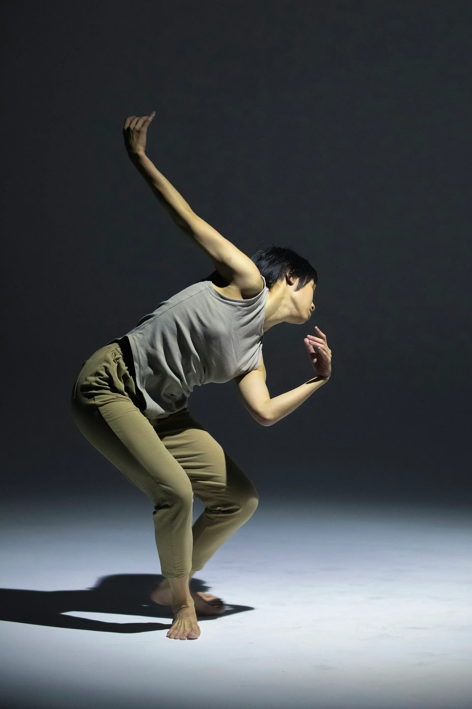
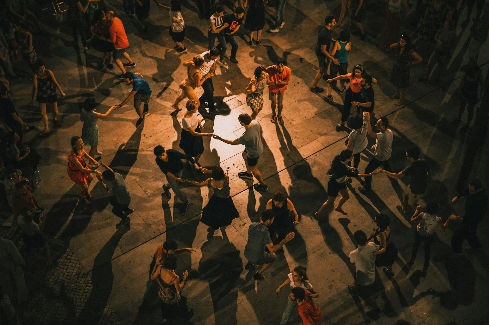
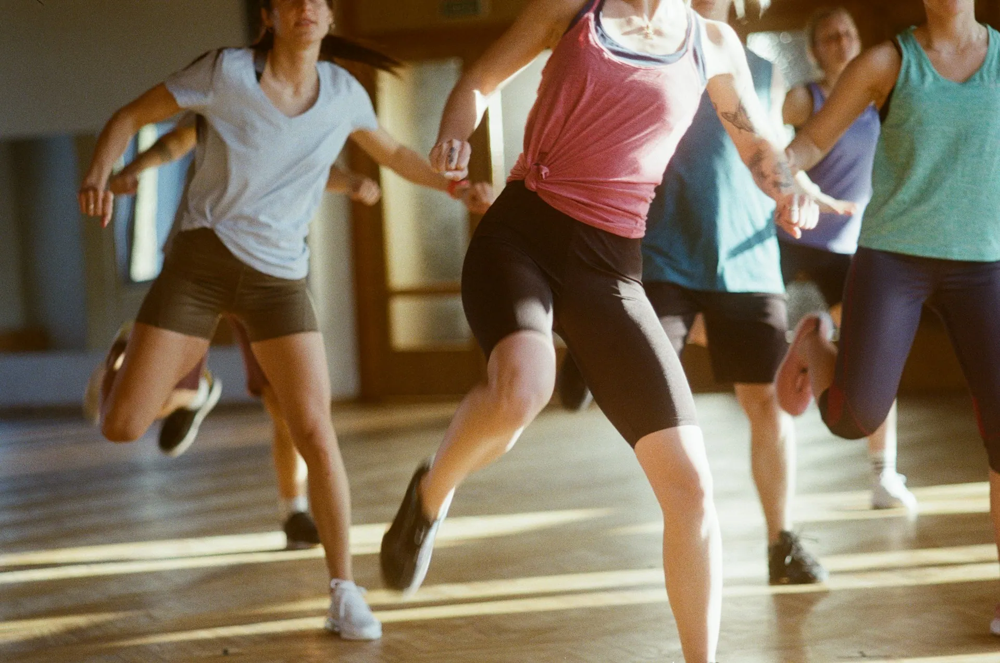
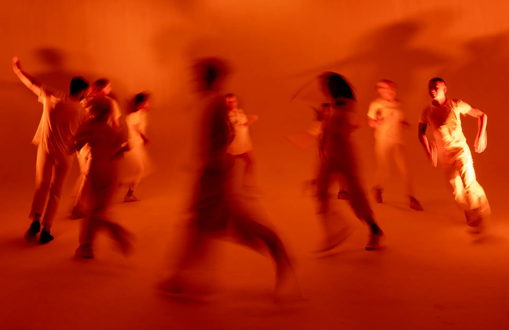

Школа танцев, Красноярск
Взрослые танцуют с нуля
Сальса, бачата, современный танец и хай-хилс. Группы собираем по уровню, партнёра находим внутри группы — приходить парой не обязательно. Пробный урок — 500 ₽.
- Рейтинг
- 5,0
147 отзывов, Яндекс Картах - Адрес
- пр. Мира, 54
Третий этаж, лифт со двора - Часы
- Пн–Пт 17:00–22:30
Сб–Вс 11:00–19:00

Расписание на неделю
Урок — 60 минут. По пятницам в 21:30 — практика для всех учеников.
Пнсегодня
- Сальса, начинающиеМарта и Илья
- Бачата, продолжающиеЛев Орлов
- Хай-хилсВика Ден
Втсегодня
- Современный, с нуляНика Сомова
- Бачата, начинающиеЛев Орлов
Срсегодня
- Сальса, начинающиеМарта и Илья
- Сальса, продолжающиеМарта и Илья
- Хай-хилсВика Ден
Чтсегодня
- Современный, с нуляНика Сомова
- Бачата, начинающиеЛев Орлов
- Современный, продолжающиеНика Сомова
Птсегодня
- Бачата, продолжающиеЛев Орлов
- Хай-хилсВика Ден
- Практика для всехвсе преподаватели
Сбсегодня
- Сальса, интенсивМарта и Илья
- Современный, с нуляНика Сомова
- Бачата, начинающиеЛев Орлов
Вссегодня
- Хай-хилс, с нуляВика Ден
- Сальса, начинающиеМарта и Илья
- Сальса
- Бачата
- Современный танец
- Хай-хилс
Абонементы
Абонемент действует на все направления своего уровня. Пропустили урок — отработайте в любой другой группе на неделе.
Преподаватели
- Марта и Ильясальса
Танцуют в паре 11 лет, ведут группы для начинающих.
- Лев Орловбачата
Бачата сенсуаль, объясняет ведение по шагам.
- Ника Сомовасовременный танец
Хореограф, ставит номера для городских фестивалей.
- Вика Денхай-хилс
Учит держаться на каблуке уверенно и без боли в ногах.
Залы и вечеринки



Почему к нам приходят снова
Партнёр найдётся
В парных группах партнёры меняются каждые несколько минут. Приходить вдвоём не нужно, учиться так даже быстрее.
Группы по уровню
Новички не стоят в последнем ряду за опытными. Переходите в следующую группу, когда преподаватель скажет, что пора.
Пропуск — не беда
Пропущенный урок можно отработать в любой группе своего уровня на той же неделе.
Практики по пятницам
Каждую пятницу в 21:30 — вечер, где можно потанцевать с учениками всех групп. Входит в абонемент.
Что говорят ученики
5,0 из 5 — 147 отзывов, Яндекс Картах
Пришла на бачату одна, думала, буду стоять у стенки. Партнёры меняются каждые пять минут, через месяц уже танцую на практиках.
Жена подарила абонемент на сальсу. Два левых ботинка, как говорится, но Марта и Илья объясняют так, что получается даже у меня.
Хай-хилс у Вики — два часа уверенности в неделю. Записываюсь в приложении, напоминание приходит за пару часов.
Частые вопросы
Я никогда не танцевал(а). Мне подойдёт?
Да, большинство групп — с нуля. На пробном уроке преподаватель подскажет, в какую группу идти дальше.
Нужен ли партнёр?
Нет. В парных направлениях партнёры меняются по кругу, пары собираются внутри группы.
Что надеть?
Удобную одежду и обувь, в которой легко крутиться. Для хай-хилс — каблук, который держит ногу; на первый урок можно в кроссовках.
Как отработать пропуск?
Запишитесь в приложении в любую группу своего уровня на той же неделе — урок спишется с абонемента.
Как нас найти
- Адрес
- пр. Мира, 54, КрасноярскТретий этаж, лифт со двора
- Часы работы
- Пн–Пт 17:00–22:30
Сб–Вс 11:00–19:00 - Телефон
- +7 900 000-00-00
пр. Мира, 54, Красноярск